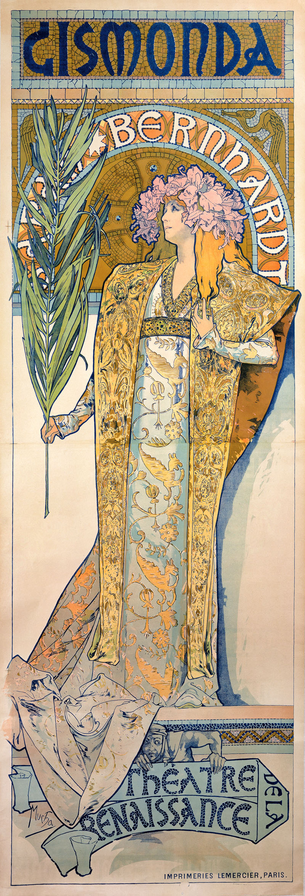
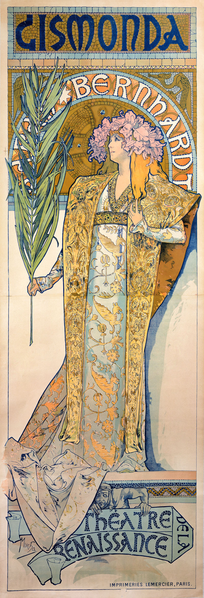

Alfons Maria Mucha è stato un pittore, scultore e pubblicitario ceco. Il suo nome viene spesso francesizzato come Alphonse Mucha. È stato uno dei più influenti artisti dell'Art Nouveau, dando un sostanziale contributo al successo e alla diffusione di questo stile in Europa e oltre, grazie alla realizzazione di opere di grandissima circolazione, come i manifesti litografici pubblicitari o gli album di repertori decorativi.


 
